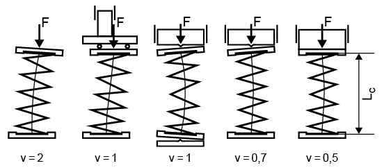

|
|
|


支承系数
该系数用于圆柱压缩弹簧。
支承系数 ν 的值根据您选择的 而变化，如图（见图 46.1）所示。

图 46.1：轴向受载压缩弹簧的支承及其对应的支承系数
支承系数 v 用于计算压曲弹簧行程 sk。如果未达到压曲安全系数，则必须对弹簧进行导向，否则弹簧将发生压曲。
English Original
Bearings coefficient
This coefficient is used for cylindrical compression springs.
The value of the support coefficient ν varies according to the you select, as shown in Figure (see Figure 46.1).
Figure 46.1: Supports with associated support coefficients for axially stressed compression springs
The support coefficient v is used for calculating the buckling spring travel sk. If the buckling safety factor is not reached then the spring must be guided, otherwise it will buckle.